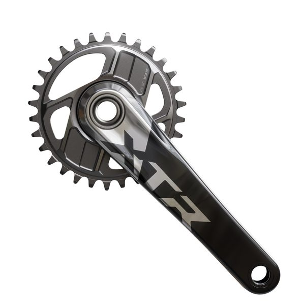
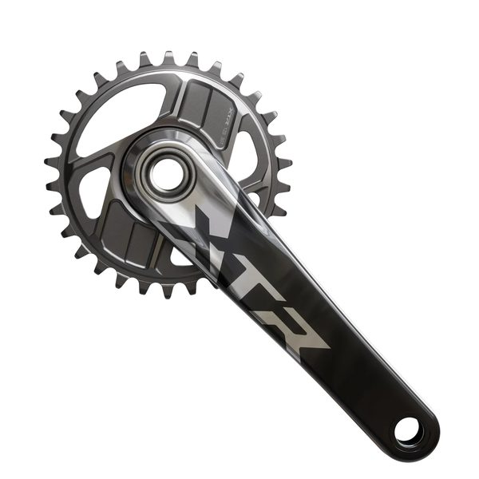
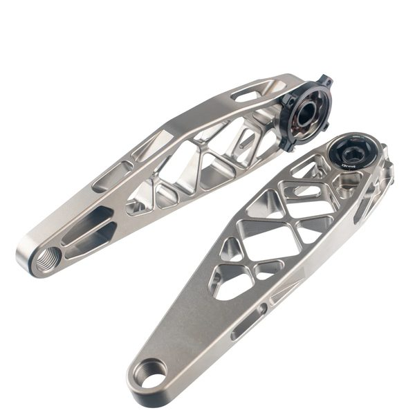

Cranksets
SRAM X01 DH
4524 pts · 10 tracked riders
Compare 22 cranksets used by 59 tracked professional downhill riders. See rider count, competition points and associated profiles. The current points leader in this category is SRAM X01 DH.
4524 pts · 10 tracked riders


1872 pts · 9 tracked riders







This table records competitive usage within the RidersFanatics dataset. It does not claim that the first product is universally better, and race prototypes may differ from retail specifications.